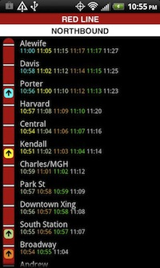
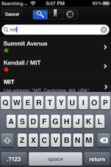

Magic Ink

At heart, all transportation software is information software.
It tells us how to get from where we are to where we want to go. Unfortunately, many existing applications in this field are designed as manipulation software -- they often force us to specify the type of route and when we want to leave or arrive. When we use them again, they forget everything about how they were used before and force us to enter even more data.
Magic Ink is one of Team Nietzsche's primary inspirations; it promotes a design approach structured around the way we actually use data to inform our decisions.
The main ideas:
- Show the relevant data
- Help users make comparisons
- Eliminate unnecessary interaction
- Julian
MBTA T Times

MBTA T Times is an app for tracking various trains and features a graphical representation of all the T stops on a particular subway line (except the green line, as the green line has no live data), showing where each train is at this moment and when it will leave the next station (the app, however, is unclear as to whether the time is when the train will leave or arrive at the station, it took a bit of playing around before I figured it out). Trains and their times are color coded (eg a blue train leaves a station at the time listed in blue), but it took me a while to figure that out. I like this idea, as it makes it easier to see how late missing one train will make you, although it’s not implemented very wellas it's sometimes difficult to match trains with times and also not immediately apparent what the app is actually doing. Also took a while for me to realize I had to hit the phone's menu button in order to have the option of switching to a different line. It doesn’t automatically update times after a train has passed, which is a problem. It remembers which line you were last looking at, which is nice.
- Laurence
Embark: Bos for iOS

Embark has a variety of features and interactions that make it far easier and more enjoyable to use than similar applications. The MBTA system map is not a static image, but an interactive display. When a station is clicked, it displays a schedule of trains arriving soon. When searching for places, Embark can suggests stations with similar names, but can also use a Google search as an alternative. This does not work as well as the Google Maps application, but is still infinitely better than other applications which only allow you to use station names. The results page is a short list of options that display information important in making a decision (total duration, walking distance, etc.). Other applications do this too, but the information overflows to the step-by-step directions once you have picked a route. Embark collapses each leg of the journey into an easy to view, single step. It can be expanded if clicked on, but this is not the default mode—perfect for the average user.
There are numerous other features that make Embark stand out—integrated walking directions, searching through your list of contacts, texting your route to a friend’s cell phone—but overall it stands out because of its visual simplicity, restraint in displaying information, and intuitive layout of tasks.
- Brett
Metro Madrid

Really useful for Metro users. However, if you are an infrequent Metro user, it doesn’t look so useful for you. If you open this app, you will see a menu (home) in which you have to choose what you want to do. No matter what it shows, if you are an infrequent Metro user and want to go somewhere else, I’m sure you would choose journeys. There you can choose between current location,or even drop a pin in the map in order to select your start point. When you get all your information done, you will choose between two options: fewer stops or fewer transfers. And finally you will get a brief summary of your journey, which even doesn’t inform you about the time that it’s going to take you. Although you can choose a street to start your journey, the app won’t give you any direction to go from that street to the nearest station, so you would have to figure out the way. Selecting any of the other options, you can find more uselessness. For example, if you choose map you will get the image of the map but you would have to find where you are (remember that you are an infrequent Metro user) and even worse you would have to find out where you are going. Tough task!
- Pati